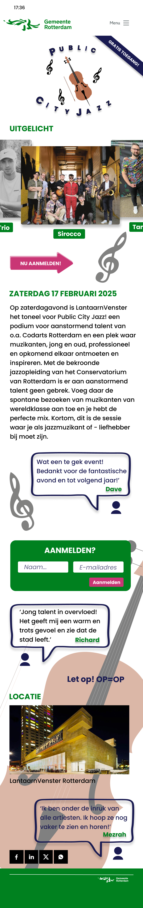
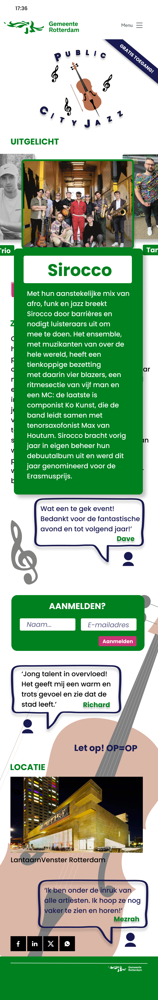
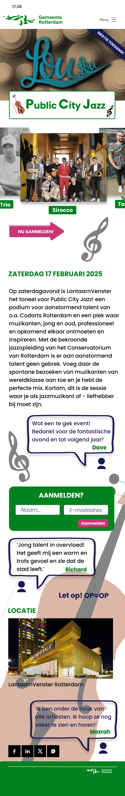

Project context
Voor de gemeente Rotterdam is een dynamische one-pager ontwikkeld om het Public City Jazz-evenement te promoten onder jongeren. Het doel was om een frisse en aantrekkelijke online ervaring te creëren die jongeren enthousiast maakt voor dit jazzfestival.
De website is responsief ontworpen en werkt soepel op smartphone, tablet en desktop. Met een strak design, krachtige visuals en interactieve elementen wordt de energie van jazz vertaald naar een digitale ervaring.
Doel
Jongeren enthousiasmeren voor het jazzfestival in Rotterdam.
Aanpak
One-page design met focus op visual storytelling en interactie.
Rol
UX/UI design + visuele animatie conceptontwikkeling.
One pager



Typografie animatie
Resultaat
Een moderne en energieke promotie-ervaring die jazz toegankelijk maakt voor een jong publiek.
Download volledige case study